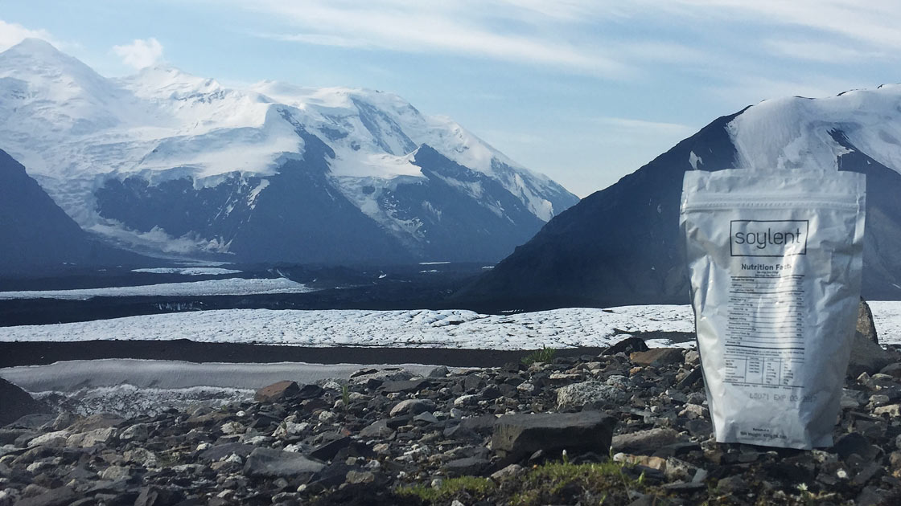

Soylent 2.0
얼마 전 [Hacker News][]에 Soylent 라는 제품에 대한 글이 올라왔었습니다. 한 끼를 대체할 수 있는, 영양이 골고루 들어간 대체식품이었는데요. Soylent 1.5라는 파우더 제품이었습니다.

비록 유기농이나 GMO free 음식물은 아니지만 영양소가 골고루 들어있고 먹기 간편해서 관심이 가던 제품이었습니다. 다만 파우더로 되어있어서 물이나 우유에 타서 먹어야 합니다. 그래서 처음 주문하면 스쿱과 혼합을 위한 병을 같이 줍니다. 마치 미숫가루를 타는 것과 같은데요. 이 부분이 조금 번거로워 보여서 관망만 하고 있었네요.
그러다 얼마 뒤 액상으로 이미 섞여서 나온 Soylent 2.0 제품이 출시되었습니다.

병으로 되어있어 더욱 간편해졌습니다. 그래서 12병 기본을 주문해 보고, 괜찮아서 Subscription (매달 정기 구매)을 신청했습니다.
일단 정기 구독을 하면 한 병에 약 $2.42 정도 됩니다. 원화로 하면 2700원 정도네요. 한국의 점심이 6천원 정도라 보면, 한끼를 대체할 수 있는 것 치고는 싼 듯 해 보입니다. 그러나 음료라는 생각이 들면 2700원은 선뜻 손이 가지 않는 가격이기도 하죠.
지금 살고 있는 실리콘벨리에서는 그 어디를 가도 6천원에 해결이 안되는 경우가 많습니다. 저렴하다는 배트남 쌀국수를 먹어도 11달러는 줘야되기에 2.42달러는 정말 저렴한 금액입니다. 그래서 부담이 좀 덜 하기는 합니다.
그동안 한 평생 "아침"은 거의 먹지 않고 지내왔던 것 같습니다. 중고등학교 때에도 어머니가 차려주신 아침도 먹는 둥 마는 둥 하며 부랴부랴 학교 가는 일이 빈번했었는데요. 아침을 먹지 않는다 치면, 저녁 7시에 저녁식사를 하고 다음 날 12시까지는 제대로 된 영양분을 섭취하지 않고 있었던 겁니다. 오랫동안 그 식습관을 유지해 온 탓인지, 그다지 배고픔을 느끼지도 않았네요.
다만 하루에 충분한 열량을 섭취하지 않고 있다는 것은 인지하고 있었습니다. 그래서 열량을 좀 채워보고자, 주말에 아침 일찍 서핑하러 갈 때 공복을 채우고자 주문해서 아침에 먹기 시작했습니다.
taste
Soylent의 영양소 성분표를 보면 열량은 1일 권장량인 2000 칼로리의 1/5 라서 매 끼니를 Soylent로 대체하려면 5병을 마셔야 합니다. 전 모든 끼니를 대체하는 게 아니라 아침 열량을 채우는 것이기에 400 칼로리로 충분한 것 같습니다.
성분표에서 보다시피, 콩이 들어있고, 이로 인해 맛은 두유맛에 매우 가깝습니다. 그냥 두유라기보다, 조금 진득한 두유? 정도 인 것 같은데, 충분히 먹을만 합니다. 두유 한 잔보다 영양소가 풍부하구나.. 생각하고 먹으면 뭐 그런대로 나쁘지 않은것 같네요.
다만, 매 끼니를 대체하려고 생각하시는 분에게는 머릿속에 각인되어있는 삼겹살, 치킨등의 강렬한 맛을 잊을 수 있을 만큼의 맛은 아닌 것 같네요. 즉, 이 Soylent로 열량 조절을 해서 다이어트를 생각하시는 분이 있다면 적극 말리고 싶습니다. 하루 내내 이것만 먹는다면, 5병을 먹는 부담도 부담이지만, 단단한 것을 씹지 않기에 치아도 약해질 수 있다고 하네요. 그래서 Soylent는 한 끼를 대체하고 나머지는 견과나 채소등으로 조절하시는 것이 좋겠습니다.
calories
성인의 하루 권장 열량은 2000 칼로리입니다. 제가 먹는 양을 고려해 볼때 기존에 아침을 먹지 않던 습관을 고려하면 하루 열량은 많아봐야 1500 칼로리 큰처였던 것 같습니다. 거기에다 Soylent를 한 병 아침에 마셔주면 거의 2000 칼로리에 근접하게 섭취할 수 있었습니다.
거기에 추가로, 얼마 전부터 점심과 저녁 사이 오후 3시쯤에 한 병을 더 마시기 시작했습니다. 추가 칼로리를 섭취해서 운동과 병행해서 몸무게를 늘릴 생각입니다. 제가 몸무게가 키에비해 무척 적게 나가서 건강도 생각할 겸 시도해 보고 있습니다.
일단 한 달 동안 수영이나 달리기, 주말에는 간단히 서핑 연습 (이제 겨우 일어서는 연습중이에요...) 등의 운동과 병행해보니 지금 약 600g 정도 몸무게가 늘어난 것 같네요. 이대로 몇 달 간 진행해 볼 생각입니다. 추후에 경과를 업데이트 할게요.
conclusion
간단히 마실 것에 대한 리뷰라 그다지 많은 설명을 할 것이 없네요. 저 같이 아침을 걸르는데 보충하면 좋겠다, 생각이 드시는 분이나, 매끼니 거하게 먹어서 몸무게가 불어나는 것은 주체할 수 없는 상태인데 굶는 것은 공복감 때문에 폭식으로 이어져서 다이어트에 도움이 안된다, 생각이 드시는 분에게는 꽤 알맞은 제품인 것 같습니다.
Soylent는 현재 미국과 캐나다만 배송이 가능합니다. 그리고 Soylent 2.0은 액상이라 무게가 상당하기에 직구로 구매하면 배송료가 많이 나오는 제품입니다. 만일 Soylent를 한국에서 시도해 보고 싶으신 분은 파우더가 더 나은 선택이구요. Soylent를 본 따 한국에서 만들어지는 제품도 있습니다. 밀스 2.0 제품인데, Soylent와 유사하지만 한국에 좀 더 맞춰져 있는 제품으로 보이네요.
추가로 더 마셔봐야 겠지만 일단 지금까지는 간편하면서도 영양을 적당히 갖춘 Soylent에 만족 중입니다. 한 달에 48병(28 + 오후 20)을 마신다 할 때 116달러라는 금액이 소비되지만 그 이상의 가치는 충분히 하는 듯 합니다.